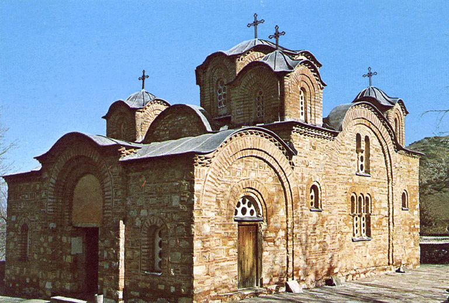
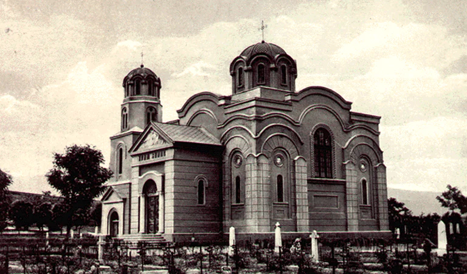

Свети Спас
- Производство
- УФУЖ и Документальное кино Прага
- Сценарий и режиссура
- Славко Яневски и EMAN CANERA
- Год
- 1959
- Продолжительность
- 00:31

Церковь Св. Пантелеймона над селом Горно-Нерези, к юго-западу от Скопье. Построена Алексеем Комнином из рода Комнинов в 1164 году. До сих пор сохранилась надпись на мраморной перемычке при входе из нартекса в наос. Здание однонефное, из камня и кирпича, с восьмигранным центральным куполом и четырьмя малыми четырёхгранными куполами по углам. Церковь - древнейший византийский памятник не только в Скопье, но и во всей Македонии. Расписана сразу после постройки. Позже, в XV, XVI и XIX веках, расписывалась заново, но первоначальная роспись делает её выдающимся памятником.


Св. Богородица, построенная в 1835 году. Находилась на левом берегу Вардара. С влиянием византийской архитектуры и барочными городскими элементами в организации пространства. Сгорела во время Второй мировой войны. До того была соборным храмом города, после - соборным стал храм Св. Димитрия. (1920-е)

Церковь Св. Богородицы - 1920-е.

Собрание народа на праздник Видовдан во дворе церкви Св. Богородицы - 1919 год.

Церковь Св. Димитрия построена в XVIII веке на месте средневековой церкви Св. Димитрия. Отремонтирована в 1886-94 годах, когда были сделаны ограда и колокольня. До 1980 года была соборной. Находится на левом берегу Вардара у Каменного моста (1920-е).

Церковь Св. Димитрия - 1930-е.

Скопская митрополия. Она находилась на набережной левого берега Вардара - 1920-е.

Главная улица в период формирования (сегодня улица «Македония», ведущая от нынешнего Музея города Скопье к Каменному мосту). Справа видна Католическая церковь (Дом Св. Марфы) в готическом стиле, а слева отдельные здания. Она построена на пожертвование австрийского правительства. Участок улицы у Каменного моста замощён в 1911 году для проезда султана Мурада V, посетившего Скопье перед отъездом на Косово поле.

Католическая церковь в готическом стиле, построенная в начале XX века - 1920-е.

Главная улица в сторону площади. На переднем плане Католическая церковь. (1950-е)

Главная улица в направлении вокзала (нынешний Музей города Скопье). Слева видна Католическая церковь. (1950-е)

Колокольня церкви Св. Спаса - 1910-е.

Церковь Св. Спаса находится напротив Скопской крепости - Кале. Построена в конце XVII века. Это небольшая церковь, наполовину врытая в землю. Она славится одной из старейших и красивейших алтарных преград, выполненной в дереве глубокой резьбой братьями Фрчковскими из Галичника: Петре, руководителем, Марко и Макарием. Они изображены на правой стороне иконостаса, созданного в 1814-1824 годах. Снимок 1920-х годов.

Двор церкви Св. Спаса. Фотография сделана в 1930-е годы.

Панорама Скопье. Внизу на переднем плане церковь Св. Спаса - 1970-е.

Церковь Св. Георгия - в квартале «Чаир» - 1930-е.

Церковь «Св. Константина и Св. Елены». - 1930-е.

Храм славы и воинское кладбище Балканских войн. Освящён в 1928 году. (1930-е)

 Акведук4 открытки
Акведук4 открытки Кале30 открыток
Кале30 открыток Мосты60 открыток
Мосты60 открыток Набережная58 открыток
Набережная58 открыток Площадь46 открыток
Площадь46 открыток Здания66 открыток
Здания66 открыток Христианские храмы19 открыток
Христианские храмы19 открыток Мусульманские здания33 открытки
Мусульманские здания33 открытки Офицерский дом29 открыток
Офицерский дом29 открыток Театр28 открыток
Театр28 открыток Железнодорожный вокзал13 открыток
Железнодорожный вокзал13 открыток Школы36 открыток
Школы36 открыток Парки12 открыток
Парки12 открыток Рынки18 открыток
Рынки18 открыток Улицы38 открыток
Улицы38 открыток Панорама I60 открыток
Панорама I60 открыток Панорама II30 открыток
Панорама II30 открыток Коллажи55 открыток
Коллажи55 открыток Наводнения9 открыток
Наводнения9 открыток Землетрясение27 открыток
Землетрясение27 открыток Скопье 200026 открыток
Скопье 200026 открыток